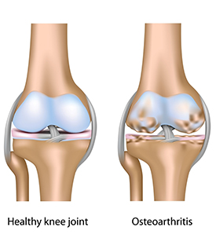

ARTHRITIS & JOINT STIFFNESS
Arthritis is a common disorder that affects your joints. It can cause pain and inflammation, making it difficult to move or stay active. There are many types of arthritis. Each form causes different symptoms and may need different treatments. While arthritis usually affects older adults, it can develop in men, women and children of any age.
